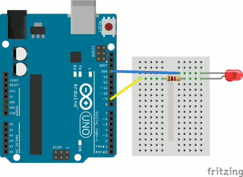

Chapel Field Christian Schools
We're going to learn how to make an LED gradually fade on and off. We'll actually use two different methods. It's important for you to realize that there is almost always more than one way to solve a problem in computer science. Usually one of them is optimal, but not always.
Get your supplies and take out only the Arduino and the USB cable. Connect your Arduino to your laptop, open the Arduino IDE, and make sure the correct port is selected.
Have Mr. Olinda verify this checkpoint before moving on.
The first program uses the for statement. This type of statement is usually used to run the code inside repeatedly until the test condition is no longer true. Open a new sketch and delete the comments. Then add code to activate the serial connection when the Arduino turns on and set pin 9 to output. Then save the program as forFade. Add and commit your code to version control.
Have Mr. Olinda verify this checkpoint before moving on.
Then add two for statements inside the void loop() section. A for statement consists of:
for (initialize; test; increment/decrement) {
}The initialization happens once, the test happens each time through the loop, and the increment or decrement is executed if the test is true. The loop stops as soon as the test is false. The first for statement will gradually increase the brightness of the LED to the maximum value of 255, and the second will decrease the brightness of the LED to the minimum value of 0.
The initialization of the first for statement is:
int lightValue = 0The test for the first for statement is:
lightValue <= 255The loop increments the value of lightValue once each time:
lightValue++Replace the placeholders with the code above. Once these are inserted, you're ready to add code inside the for statement that will run each time. First, you need to send the lightValue to pin 9, but instead of using digitalWrite, you will use analogWrite. The first is binary: either on or off. The second has a range of values from 0 to 255. It looks like:
analogWrite(pin, value)Only some of the pins support analog output. Use analogWrite to send lightValue to pin 9. Then add code to output lightValue to the serial monitor as well. Then add a ten millisecond delay at the end of the loop.
Look at your board and identify the symbol that tells you which ones support analog.
Have Mr. Olinda verify this checkpoint before moving on.
The contents of the second for statement are identical, but the initialization, test, and increment/decrement are different. Figure out how to reduce the brightness from a starting value of 255 down to 0.
Have Mr. Olinda verify this checkpoint before moving on.
Set up your Arduino so that it is connected to the red external LED with a 1K resistor between the Arduino and the LED. Make sure your LED is wired into the right pin. Then upload your code and test it. You should see the light gradually increase and decrease in brightness. Confirm this with the serial monitor. If you're successful, then format, save, add, and commit your code.

Have Mr. Olinda verify this checkpoint before moving on.
Open a new sketch and delete the comments. This time we're going to use the if statement and we will need only one loop instead of two. First, set two variables at the very beginning of the program, before the void setup() function:
int lightValue = 0;
int delta = 1;We are setting the initial value of lightValue to 0 and the value of delta (which means change) to 1. Then, add code to set pin 9 to output and activate the serial connection. Save the program as ifFade and then add and commit it to version control.
Have Mr. Olinda verify this checkpoint before moving on.
Now, in the void loop() section, add:
lightValue = lightValue + delta;
if (lightValue <= 0 || lightValue >= 255) {
delta = -delta;
}Explain what you think this code does.
Have Mr. Olinda verify this checkpoint before moving on.
Add code to the void loop() section to output lightValue to both the LED and the serial monitor, and add a ten millisecond delay. Then upload the code to your Arduino. If it works, then format, save, add, and commit it.
Have Mr. Olinda verify this checkpoint before moving on.
Go back and add a comment block at the beginning of your program to concisely explain what it does. Then save, add, commit, and push your code.
Have Mr. Olinda verify this checkpoint before moving on.